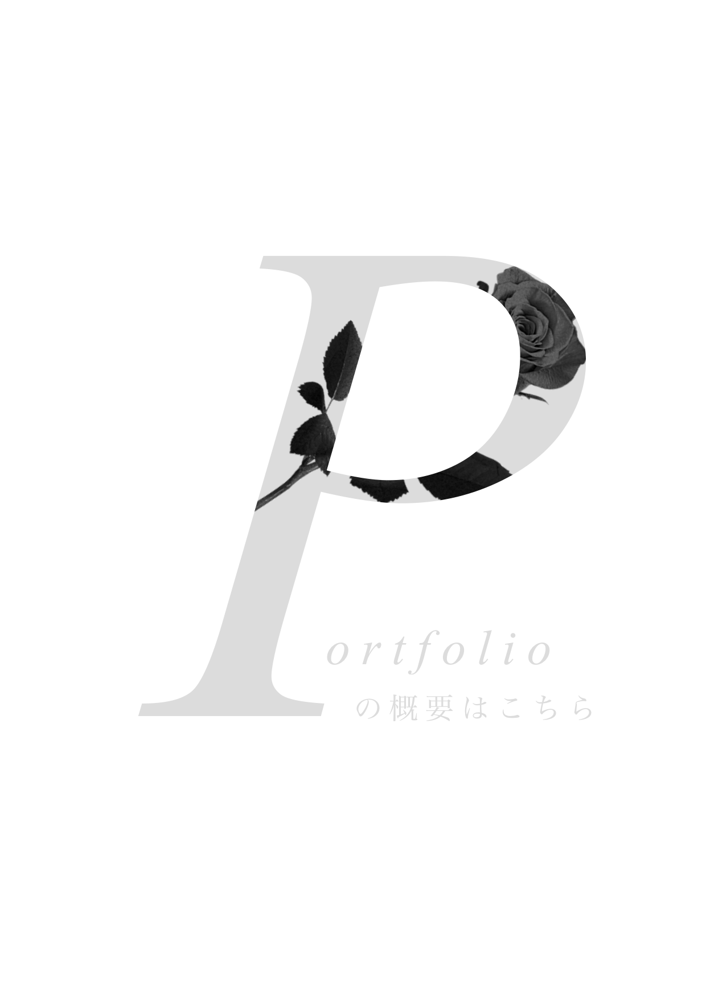
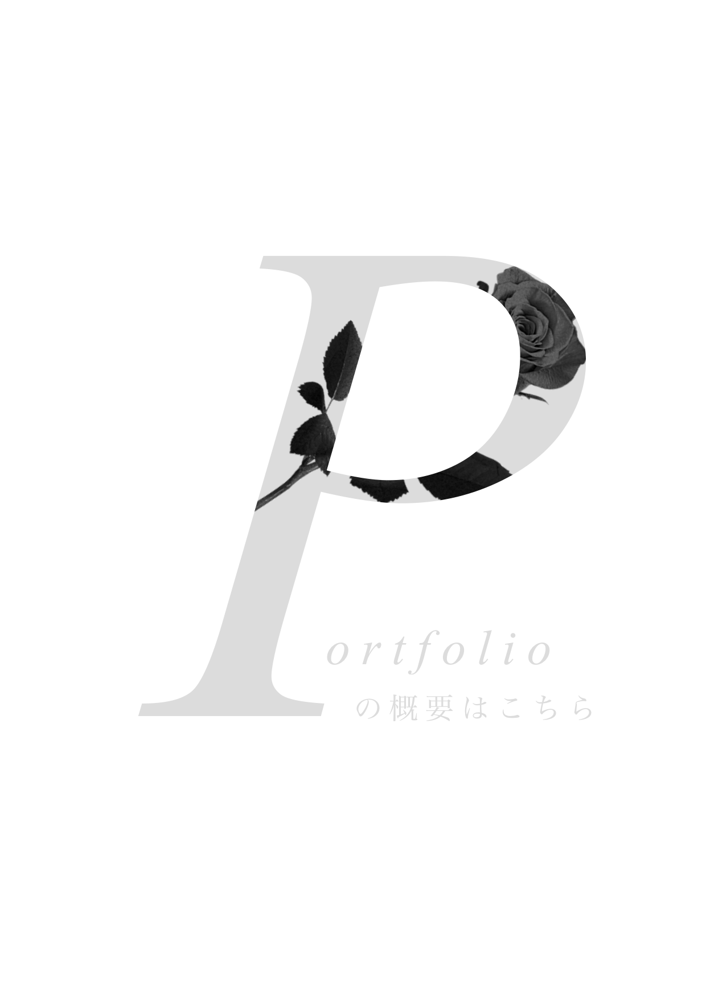

こちらは、私が専門学校に入学して最初にPhotoShopを使用して作成した作品になります。
授業の中で、個人個人フリーお題で1個作品を制作することになり、試行錯誤しながら完成させました。
今見ると至らぬ点や、改善点がたくさんある作品ですが、その時高く評価していただいた思い入れのある作品ですので載せました。
クラゲは浮くと言いますが、この写真のクラゲは沈んでいるように感じられました。
私はその考えから、「沈」という言葉をのせ様々な加工をしました。
ぼかしなどで水面を表現しています。


こちらは、私が専門学校に入学して最初にPhotoShopを使用して作成した作品になります。
授業の中で、個人個人フリーお題で1個作品を制作することになり、試行錯誤しながら完成させました。
今見ると至らぬ点や、改善点がたくさんある作品ですが、その時高く評価していただいた思い入れのある作品ですので載せました。
クラゲは浮くと言いますが、この写真のクラゲは沈んでいるように感じられました。
私はその考えから、「沈」という言葉をのせ様々な加工をしました。
ぼかしなどで水面を表現しています。
架空のファッションブランドの広告です。
「結び」という言葉には、人と人の縁・結びについての様々な意味が込められています。
親と子の結び。友人との結び。恋人又は夫婦の結び。
この広告を見る人にとって、大事な人のことを思い出してもらえるようなデザインにしました。
ちなみに...赤い丸線は赤い糸なども意味しています。
この写真の女性は、使用を許可してくださった私の友人ですので、権利関係も意識しています。
架空のファッションブランドの広告です。
ターゲットは主に10代ですが、男女問わず誰しも持っている子供心をくすぐられるようなデザインを目指すファッションブランドです。
2000年代頃のファッションを想定しており、それに加え現代のファッションが取り入れられた形となります。
2000年代のファッション雑誌で使用されることの多いビビットな色と、まるで外国の新聞記事のようなデザインを加えました。
顔写真には著作権など含まれるため、今回はAI画像を生成し加工しました。
もしよろしければ、こちらもご覧ください。
 
